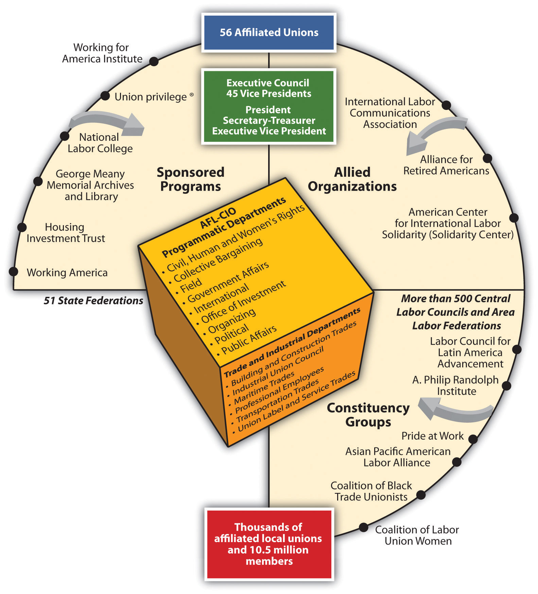
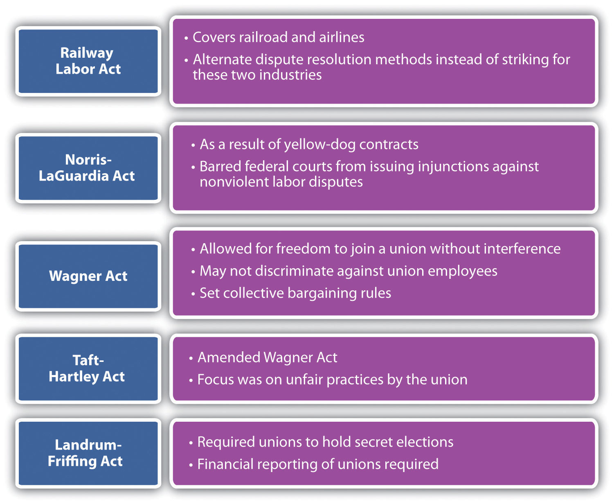
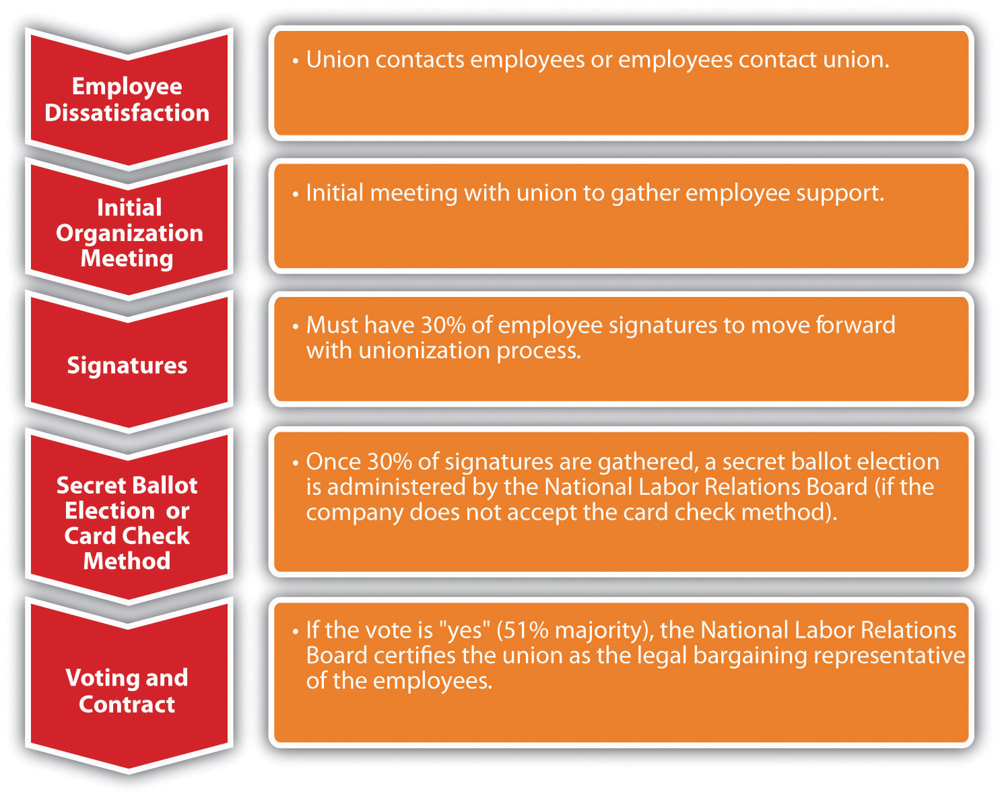
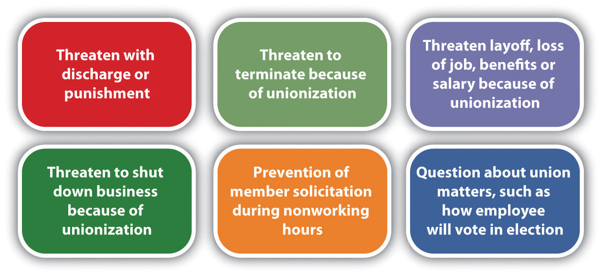
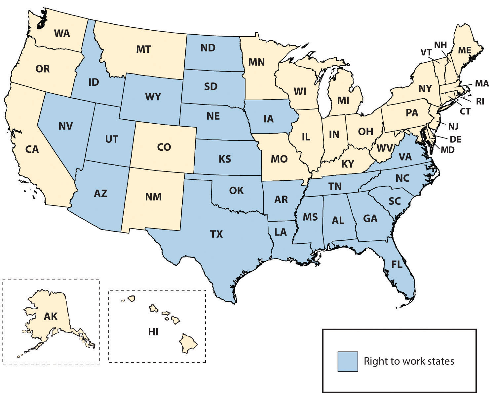
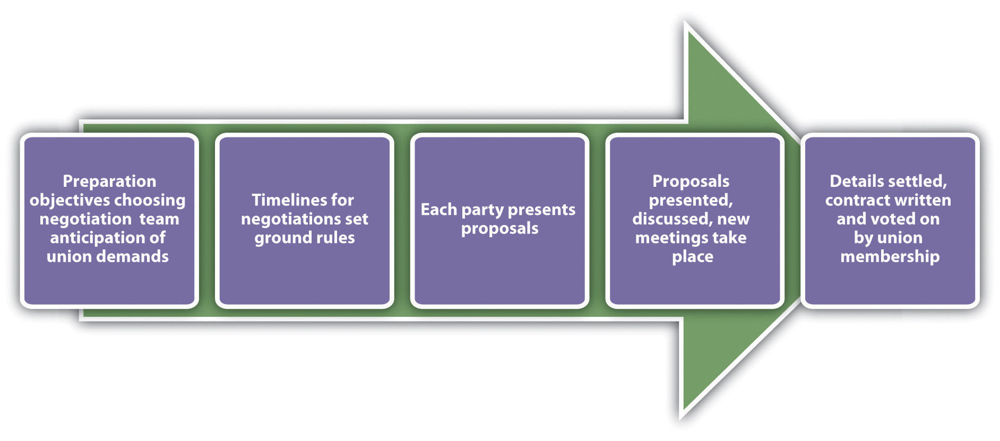
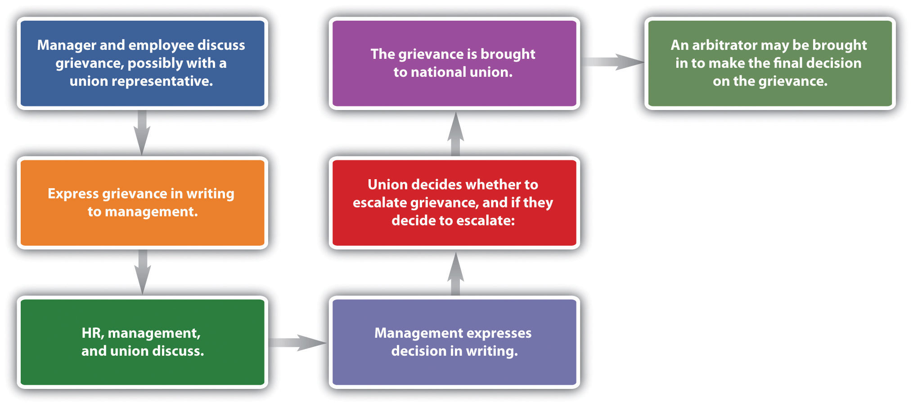
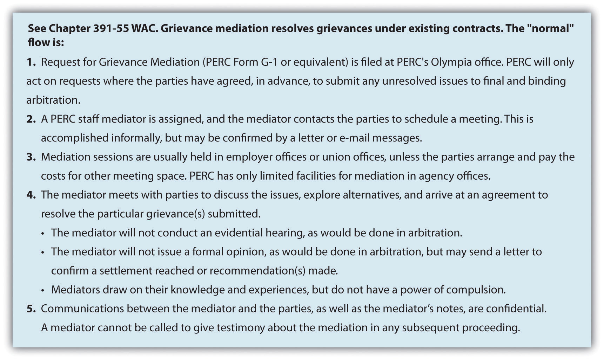

As the HR manager for a two-hundred-person company, you tend to have a pretty good sense of employee morale. Recently, you are concerned because it seems that morale is low, because of pay and the increasing health benefit costs to employees. You discuss these concerns with upper-level management, but owing to financial pressures, the company is not able to give pay raises this year.
One afternoon, the manager of the marketing department comes to you with this concern, but also with some news. She tells you that she has heard talk of employees unionizing if they do not receive pay raises within the next few months. She expresses that the employees are very unhappy and productivity is suffering as a result. She says that employees have already started the unionization process by contacting the National Labor Relations Board and are in the process of proving 30 percent worker interest in unionization. As you mull over this news, you are concerned because the organization has always had a family atmosphere, and a union might change this. You are also concerned about the financial pressures to the organization should the employees unionize and negotiate higher pay. You know you must take action to see that this doesn’t happen. However, you know you and all managers are legally bound by rules relating to unionization, and you need a refresher on what these rules are. You decide to call a meeting first with the CEO and then with managers to discuss strategy and inform them of the legal implications of this process. You feel confident that a resolution can be developed before the unionization happens.
The author introduces the chapter on labor unions.
A labor unionA group of workers who band together to meet common goals, such as better pay, benefits, or promotion rules., or union, is defined as workers banding together to meet common goals, such as better pay, benefits, or promotion rules. In the United States, 11.9 percent of American workers belong to a union, down from 20.1 percent in 1983.“Union Members: 2010,” Bureau of Labor Statistics, US Department of Labor, news release, January 21, 2011, accessed April 4, 2011, http://www.bls.gov/news.release/pdf/union2.pdf. In this section, we will discuss the history of unions, reasons for decline in union membership, union labor laws, and the process employees go through to form a union. First, however, we should discuss some of the reasons why people join unions.
People may feel their economic needs are not being met with their current wages and benefits and believe that a union can help them receive better economic prospects. Fairness in the workplace is another reason why people join unions. They may feel that scheduling, vacation time, transfers, and promotions are not given fairly and feel that a union can help eliminate some of the unfairness associated with these processes. Let’s discuss some basic information about unions before we discuss the unionization process.
Trade unions were developed in Europe during the Industrial Revolution, when employees had little skill and thus the entirety of power was shifted to the employer. When this power shifted, many employees were treated unfairly and underpaid. In the United States, unionization increased with the building of railroads in the late 1860s. Wages in the railroad industry were low and the threat of injury or death was high, as was the case in many manufacturing facilities with little or no safety laws and regulations in place. As a result, the Bortherhood of Locomotive Engineers and several other brotherhoods (focused on specific tasks only, such as conductors and brakemen) were formed to protect workers’ rights, although many workers were fired because of their membership.
A video from the AFL-CIO shows a history of labor unions, from its perspective.
The first local unions in the United States were formed in the eighteenth century, in the form of the National Labor Union (NLU).
The National Labor Union, formed in 1866, paved the way for other labor organizations. The goal of the NLU was to form a national labor federation that could lobby government for labor reforms on behalf of the labor organizations. Its main focus was to limit the workday to eight hours. While the NLU garnered many supporters, it excluded Chinese workers and only made some attempts to defend the rights of African-Americans and female workers. The NLU can be credited with the eight-hour workday, which was passed in 1862. Because of a focus on government reform rather than collective bargaining, many workers joined the Knights of Labor in the 1880s.
The Knights of Labor started as a fraternal organization, and when the NLU dissolved, the Knights grew in popularity as the labor union of choice. The Knights promoted the social and cultural spirit of the worker better than the NLU had. It originally grew as a labor union for coal miners but also covered several other types of industries. The Knights of Labor initiated strikes that were successful in increasing pay and benefits. When this occurred, membership increased. After only a few years, though, membership declined because of unsuccessful strikes, which were a result of a too autocratic structure, lack of organization, and poor management. Disagreements between members within the organization also caused its demise.
The American Federation of Labor (AFL) was formed in 1886, mostly by people who wanted to see a change from the Knights of Labor. The focus was on higher wages and job security. Infighting among union members was minimized, creating a strong organization that still exists today. In the 1930s, the Congress of Industrial Organizations (CIO) was formed as a result of political differences in the AFL. In 1955, the two unions joined together to form the AFL-CIO.
Currently, the AFL-CIO is the largest federation of unions in the United States and is made up of fifty-six national and international unions. The goal of the AFL-CIO isn’t to negotiate specific contracts for employees but rather to support the efforts of local unions throughout the country.
Currently in the United States, there are two main national labor unions that oversee several industry-specific local unions. There are also numerous independent national and international unions that are not affiliated with either national union:
The national union plays an important role in legislative changes, while the local unions focus on collective bargaining agreements and other labor concerns specific to the area. Every local union has a union stewardAn elected person with the organization who represents the interests of union members. who represents the interests of union members. Normally, union stewards are elected by their peers.
A national union, besides focusing on legislative changes, also does the following:
1. Lobbies in government for worker rights laws
2. Resolves disputes between unions
3. Helps organize national protests
4. Works with allied organizations and sponsors various programs for the support of unions
For example, in 2011, the national Teamsters union organized demonstrations in eleven states to protest the closing of an Ontario, California, parts distribution center. Meanwhile, Teamster Local 495 protested at the Ontario plant.“Teamsters Escalate BMW Protests across America,” PR Newswire, August 2, 2011, accessed August 15, 2011, http://www.teamster.org/content/teamsters-escalate-bmw-protests-across-america.
Figure 12.1 The Complicated Structure of AFL-CIO
Source: AFL-CIO.
The labor movement is currently experiencing several challenges, including a decrease in union membership, globalization, and employers’ focus on maintaining nonunion status. As mentioned in the opening of this section, the United States has seen a steady decline of union membership since the 1950s. In the 1950s, 36 percent of all workers were unionized,Gerald Friedman, “Labor Unions in the United States,” Economic History Association, February 2, 2010, accessed April 4, 2011, http://eh.net/encyclopedia/article/friedman.unions.us. as opposed to just over 11 percent today.
When you are hired for your first job or your next job, do you think you would prefer to be part of a union or not?
Claude Fischer, a researcher from University of California Berkeley, believes the shift is cultural. His research says the decline is a result of American workers preferring individualism as opposed to collectivism.Claude Fischer, , “Why Has Union Membership Declined?” Economist’s View, September 11, 2010, accessed April 11, 2011, http://economistsview.typepad.com/economistsview/2010/09/why-has-union-membership-declined.html. Other research says the decline of unions is a result of globalization, and the fact that many jobs that used to be unionized in the manufacturing arena have now moved overseas. Other reasoning points to management, and that its unwillingness to work with unions has caused the decline in membership. Others suggest that unions are on the decline because of themselves. Past corruption, negative publicity, and hard-line tactics have made joining a union less favorable.
To fully understand unions, it is important to recognize the global aspect of unions. Statistics on a worldwide scale show unions in all countries declining but still healthy in some countries. For example, in eight of the twenty-seven European Union member states, more than half the working population is part of a union. In fact, in the most populated countries, unionization rates are still at three times the unionization rate of the United States.Federation of European Employers, “Trade Unions across Europe,” accessed April 4, 2011, http://www.fedee.com/tradeunions.html. Italy has a unionization rate of 30 percent of all workers, while the UK has 29 percent, and Germany has a unionization rate of 27 percent.
In March 2011, Wisconsin governor Scott Walker proposed limiting the collective bargaining rights of state workers to save a flailing budget. Some called this move “union busting” and said this type of act is illegal, as it takes away the basic rights of workers. The governor defended his position by saying there is no other choice, since the state is in a budget crisis. Other states such as Ohio are considering similar measures. Whatever happens, there is a clear shift for unions today.
Globalization is also a challenge in labor organizations today. As more and more goods and services are produced overseas, unions lose not only membership but union values in the stronghold of worker culture. As globalization has increased, unions have continued to demand more governmental control but have been only somewhat successful in these attempts. For example, free trade agreements such as the North American Free Trade Agreement (NAFTA) have made it easier and more lucrative for companies to manufacture goods overseas. This is discussed in Chapter 14 "International HRM". For example, La-Z-Boy and Whirlpool closed production facilities in Dayton and Cleveland, Ohio, and built new factories in Mexico to take advantage of cheaper labor and less stringent environmental standards. Globalization creates options for companies to produce goods wherever they think is best to produce them. As a result, unions are fighting the globalization trend to try and keep jobs in the United States.
There are a number of reasons why companies do not want unions in their organizations, which we will discuss in greater detail later. One of the main reasons, however, is increased cost and less management control. As a result, companies are on a quest to maintain a union-free work environment. In doing so, they try to provide higher wages and benefits so workers do not feel compelled to join a union. Companies that want to stay union free constantly monitor their retention strategies and policies.
The Railway Labor Act (RLA)Passed in 1926, the act applies to railroads and airlines. The goal of the act is to ensure no disruption of interstate commerce. of 1926 originally applied to railroads and in 1936 was amended to cover airlines. The act received support from both management and unions. The goal of the act is to ensure no disruption of interstate commerce. The main provisions of the act include alternate dispute resolution, arbitration, and mediation to resolve labor disputes. Any dispute must be resolved in this manner before a strike can happen. The RLA is administered by the National Mediation Board (NMB), a federal agency, and outlines very specific and detailed processes for dispute resolution in these industries.
The Norris-LaGuardia ActPassed in 1932 (also known as the anti-injunction bill) this act barred federal courts from issuing injunctions against nonviolent labor disputes and barred employers from interfering with workers joining a union. of 1932 (also known as the anti-injunction bill), barred federal courts from issuing injunctions (a court order that requires a party to do something or refrain from doing something) against nonviolent labor disputes and barred employers from interfering with workers joining a union. The act was a result of common yellow-dog contractsBefore the Norris-LaGuardia Act, contracts in which a worker agreed to not join a union before accepting a job., in which a worker agreed not to join a union before accepting a job. The Norris-LaGuardia Act made yellow-dog contracts unenforceable in courts and established that employees were free to join unions without employer interference.
In 1935, the Wagner ActA law passed in 1935 that changed the way employers can react to several aspects of unions and unionization. (sometimes called the National Labor Relations Act) was passed, changing the way employers can react to several aspects of unions. The Wagner Act had a few main aspects:
The National Labor Relations Board (NLRB)The organization that oversees and enforces the Wagner and Taft-Hartley acts. It handles unfair labor practice complaints and facilitates unionization efforts. oversees this act, handling any complaints that may arise from the act. For example, in April 2011, the NLRB worked with employees at Ozburn-Hessey Logistics in Tennessee after they had been fired because of their involvement in forming a union. The company was also accused of interrogating employees about their union activities and threatened employees with loss of benefits should they form a union. The NLRB utilized their attorney to fight on behalf of the employees, and a federal judge ordered the company to rehire the fired employees and also to desist in other antiunion activities.“Federal Judge Orders Employer to Reinstate Three Memphis Warehouse Workers and Stop Threatening Union Supporters While Case Proceeds at NLRB,” Office of Public Affairs, National Labor Relations Board, news release, April 7, 2011, accessed April 7, 2011, http://www.nlrb.gov/news/federal-judge-orders-employer-reinstate-three-memphis-warehouse-workers- and-stop-threatening-un.
The Taft-Hartley ActAn act passed in 1947 that put several restrictions on unions. It amended the Wagner Act. also had major implications for unions. Passed in 1947, Taft-Hartley amended the Wagner Act. The act was introduced because of the upsurge of strikes during this time period. While the Wagner Act addressed unfair labor practices on the part of the company, the Taft-Hartley Act focused on unfair acts by the unions. For example, it outlawed strikes that were not authorized by the union, called wildcat strikesStrikes not authorized by the union and considered illegal according to the Taft-Hartley Act.. It also prohibited secondary actionsMade illegal by the Taft-Hartley Act, which disallowed a union from going on strike in sympathy for another union. (or secondary boycotts) in which one union goes on strike in sympathy for another union. The act allowed the executive branch of the federal government to disallow a strike should the strike affect national health or security. One of the most famous injunctions was made by President Ronald Reagan in 1981. Air traffic controllers had been off the job for two days despite their no-strike oath, and Reagan ordered all of them (over eleven thousand) discharged because they violated this federal law.
The Landrum Griffin ActAn act passed in 1959 that is supposed to limit corruption in unions by requiring secret elections and reporting of financial information., also known as the Labor Management Reporting and Disclosure (LMRDA) Act, was passed in 1959. This act required unions to hold secret elections, required unions to submit their annual financial reports to the U.S. Department of Labor, and created standards governing expulsion of a member from a union. This act was created because of racketeering charges and corruptions charges by unions. In fact, investigations of the Teamsters Union found they were linked to organized crime, and the Teamsters were banned from the AFL-CIO. The goal of this act was to regulate the internal functioning of unions and to combat abuse of union members by union leaders.
Figure 12.3 Major Acts Regarding Unions, at a Glance
There are one of two ways in which a unionization process can begin. First, the union may contact several employees and discuss the possibility of a union, or employees may contact a union on their own. The union will then help employees gather signatures to show that the employees want to be part of a union. To hold an election, the union must show signatures from over 30 percent of the employees of the organization.
Figure 12.4 The Unionization Process
Once the signatures are gathered, the National Labor Relations Board is petitioned to move forward with a secret-ballot election. An alternative to the secret-ballot election is the card check method, in which the union organizer provides the company with authorization cards signed by a simple majority (half plus one). The employer can accept the cards as proof that the employees desire a union in their organization. The NLRB then certifies the union as the employees’ collective bargaining representative.
If the organization does not accept the card check method as authorization for a union, the second option is via a secret ballot. Before this method is used, a petition must be filed by the NLRB, and an election is usually held two months after the petition is filed. In essence, the employees vote whether to unionize or not, and there must be a simple majority (half plus one). The NLRB is responsible for election logistics and counting of ballots. Observers from all parties can be present during the counting of votes. Once votes are counted, a decision on unionization occurs, and at that time, the collective bargaining process begins.
Once the NLRB is involved, there are many limits as to what the employer can say or do during the process to prevent unionization of the organization. It is advisable for HR and management to be educated on what can legally and illegally be said during this process. It is illegal to threaten or intimidate employees if they are discussing a union. You cannot threaten job, pay, or benefits loss as a result of forming a union. Figure 12.5 "Things That Shouldn’t Be Said to Employees during a Unionization Process" includes information on what should legally be avoided if employees are considering unionization.
Figure 12.5 Things That Shouldn’t Be Said to Employees during a Unionization Process
Obviously, it is in the best interest of the union to have as many members as possible. Because of this, unions may use many tactics during the organizing process. For example, many unions are also politically involved and support candidates who they feel best represent labor. They provide training to organizers and sometimes even encourage union supporters to apply for jobs in nonunion environments to actively work to unionize other employees when they are hired. This practice is called union saltingA union strategy that encourages union supporters to apply for jobs in nonunion environments to actively work to unionize other employees when they are hired.. Unions, especially on the national level, can be involved in corporate campaigns that boycott certain products or companies because of their labor practices. The United Food and Commercial Workers (UFCW), for example, has a “Wake Up Walmart Campaign” that targets the labor practices of this organization.
Most organizations feel the constraints of having a union organization are too great. It affects the cost to the organization and operation efficiency. Collective bargaining at times can put management at odds with its employees and cost more to produce products and services. Ideally, companies will provide safe working conditions, fair pay, and benefits so the employees do not feel they need to form a union. There are three main phases of unionization:
Because of increased costs and operational efficiency, it is normally in a company’s best interest to avoid unionization. While in phase 1, it is important to review employee relations programs including pay, benefits, and other compensation. Ensure the compensation plans are fair so employees feel fairly treated and have no reason to seek the representation of a union.
Despite your best efforts, you could hear of unionization in your organization. The goal here is to prevent the union from gaining support to ask for a National Labor Relations Board election. Since only 30 percent of employees need to sign union cards for a vote to take place, this phase to avoid unionization is very important. During this time, HR professionals and managers should respond to the issues the employees have and also develop a specific strategy on how to handle the union vote, should it get that far.
In phase 3, familiarization with all the National Labor Relations Board rules around elections and communications is important. With this information, you can organize meetings to inform managers on these rules. At this time, you will likely want to draw up an antiunion campaign and communicate that to managers, but also make sure it does not violate laws. To this end, develop specific strategies to encourage employees to vote “no” for the union. Some of the arguments that might be used include talking with the employee and mentioning the following:
With unionization in decline, it is likely you may never need to handle a new union in your organization. However, organizations such as Change to Win are in the process of trying to increase union membership. This organization has four affiliated unions, with a goal to strengthen the labor movement. Teamsters, United Food and Commercial Workers, United Farm Workers, and Service Employees International Union are all unions affiliated with this organization.Change to Win website, accessed April 7, 2011, http://www.changetowin.org. The next few years will be telling as to the fate of unions in today’s organizations.
Perhaps no organization is better known for its antiunion stance than Walmart. Walmart has over 3,800 stores in the United States and over 4,800 internationally with $419 billion in sales.“Investors,” Walmart Corporate, 2011, accessed August 15, 2011, http://investors.walmartstores.com/phoenix.zhtml?c=112761&p=irol-irhome. Walmart employs more than 2 million associates worldwide.“Investors,” Walmart Corporate, 2011, accessed August 15, 2011, http://investors.walmartstores.com/phoenix.zhtml?c=112761&p=irol-irhome. The billions of dollars Walmart earns do not immunize the company to trouble. In 2005, the company’s vice president, Tom Coughlin, was forced to resign after admitting that between $100,000 and $500,000 was spent for undeclared purposes, but it was eventually found that the money was spent to keep the United Food and Commercial Workers union (UFCW) out of WalmartLos AngelesTimes Wire Services, “Wal-Mart Accused of Unfair Labor Practices,” accessed September 15, 2011, http://articles.latimes.com/2005/apr/13/business/fi-walmart13. (he was found guilty and sentenced to two years of house arrest).
Other claims surrounding union busting are the closing of stores, such as the Walmart Tire and Lube Express in Gatineau, Quebec,UFCW Canada, “Want a Union? You’re Fired,” n.d., accessed August 15, 2011, http://www.ufcw.ca/index.php?option=com_multicategories&view=article&id=1935&Itemid=98&lang=en. when discussions of unionization occurred. Other reports of union busting include the accusation that company policy requires store managers to report rumors of unionizing to corporate headquarters. Once the report is made, all labor decisions for that store are handled by the corporate offices instead of the store manager. According to labor unions in the United States, Walmart is willing to work with international labor unions but continues to fiercely oppose unionization in the United States. In one example, after butchers at a Jacksonville, Texas, Walmart voted to unionize, Walmart eliminated all US meat-cutting departments.
A group called OUR Walmart (Organization United for Respect), financed by the United Food and Commercial Workers* (UFCW) union, has stemmed from the accusations of union busting. Walmart spokesperson David Tovar says he sees the group as a Trojan horse assembled by labor organizations to lay the groundwork for full-fledged unionization and seek media attention to fulfill their agenda. While the organization’s activities may walk a fine line between legal and illegal union practices under the Taft-Hartley Act, this new group will certainly affect the future of unionization at Walmart in its US stores.
*Note: UFCW was part of the AFL-CIO until 2005 and now is an independent national union.
You may wonder why organizations are opposed to unions. As we have mentioned, since union workers do receive higher wages, this can be a negative impact on the organization. Unionization also impacts the ability of managers to make certain decisions and limits their freedom when working with employees. For example, if an employee is constantly late to work, the union contract will specify how to discipline in this situation, resulting in little management freedom to handle this situation on a case-by-case basis. In 2010, for example, the Art Institute of Seattle faculty filed signatures and voted on unionization.“Union Push in For-Profit Higher Ed,” Inside Higher Ed, May 24, 2010, accessed August 15, 2011, http://www.insidehighered.com/news/2010/05/24/union. Some of the major issues were scheduling issues and office space, not necessarily pay and benefits. While the particular National Labor Relations Board vote was no to unionization, a yes vote could have given less freedom to management in scheduling, since scheduling would be based on collective bargaining contracts. Another concern about unionization for management is the ability to promote workers. A union contract may stipulate certain terms (such as seniority) for promotion, which means the manager has less control over the employees he or she can promote.
Section 12.2 "Collective Bargaining" and Section 12.3 "Administration of the Collective Bargaining Agreement" discuss the collective bargaining and grievance processes.
When employees of an organization vote to unionize, the process for collective bargaining begins. Collective bargainingThe process of negotiating an agreement between management and employees. is the process of negotiations between the company and representatives of the union. The goal is for management and the union to reach a contract agreement, which is put into place for a specified period of time. Once this time is up, a new contract is negotiated. In this section, we will discuss the components of the collective bargaining agreement.
In any bargaining agreement, certain management rights are not negotiable, including the right to manage and operate the business, hire, promote, or discharge employees. However, in the negotiated agreement there may be a process outlined by the union for how these processes should work. Management rights also include the ability of the organization to direct the work of the employees and to establish operational policies. As an HR professional sits at the bargaining table, it is important to be strategic in the process and tie the strategic plan with the concessions the organization is willing to make and the concessions the organization will not make.
Another important point in the collective bargaining process is the aspect of union security. Obviously, it is in the union’s best interest to collect dues from members and recruit as many new members as possible. In the contract, a checkoff provisionThe employer, on behalf of the union, automatically deducts dues from union members’ paychecks. may be negotiated. This provision occurs when the employer, on behalf of the union, automatically deducts dues from union members’ paychecks. This ensures that a steady stream of dues is paid to the union.
To recruit new members, the union may require something called a union shop. A union shopRequires a person to join the union within a certain time period of joining the organization. requires a person to join the union within a certain time period of joining the organization. In right-to-work statesLaws passed in twenty-two states that prohibit requirements to join a union or pay dues and fees to a union. a union shop may be illegal. Twenty-two states have passed right-to-work laws, as you can see in Figure 12.6 "Map of Right-to-Work States". These laws prohibit a requirement to join a union or pay dues and fees to a union. To get around these laws, agency shops were created. An agency shopSimilar to a union shop, except that workers do not have to join the union but still must pay union dues. is similar to a union shop in that workers do not have to join the union but still must pay union dues. Agency shop union fees are known as agency feesThe fees charged by an agency shop. May be illegal in right-to-work states. and may be illegal in right-to-work states. A closed shopA type of union agreement in which a person must be a union member to be hired; it was made illegal under the Taft-Hartley Act. used to be a mechanism for a steady flow of membership. In this arrangement, a person must be a union member to be hired. This, however, was made illegal under the Taft-Hartley Act. According to a study by CNBC, all twenty-two right-to-work states are in the top twenty-five states for having the best workforces.“Best Workforces Are in Right to Work States,” Redstate, June 30, 2011, accessed August 14, 2011, http://www.redstate.com/laborunionreport/2011/06/30/best-workforces-are-in-right-to-work-states-survey-finds/. However, according to the AFL-CIO, the average worker in a right-to-work state makes $5,333 less per year than other workers.“Right to Work for Less,” AFL-CIO, accessed August 14, 2011, http://www.aflcio.org/issues/legislativealert/stateissues/work/.
Figure 12.6 Map of Right-to-Work States
In a collective bargaining process, both parties are legally bound to bargain in good faith. This means they have a mutual obligation to participate actively in the deliberations and indicate a desire to find a basis for agreement. There are three main classification of bargaining topics: mandatory, permissive, and illegal. Wages, health and safety, management rights, work conditions, and benefits fall into the mandatory categoryA collective bargaining topic, such as wages, that must be discussed in the agreement.. Permissive topicsTopics in collective bargaining that are not mandatory but still topics of discussion, such as drug testing. are those that are not required but may be brought up during the process. An example might include the requirement of drug testing for candidates or the required tools that must be provided to the employee to perform the job, such as a cellular phone or computer. It is important to note that while management is not required by labor laws to bargain on these issues, refusing to do so could affect employee morale. We can also classify bargaining issues as illegal topicsA bargaining topic that is illegal in both the bargaining agreement and within society, such as plans to discriminate against a specific group in employment., which obviously cannot be discussed. These types of illegal issues may be of a discriminatory nature or anything that would be considered illegal outside the agreement.
The collective bargaining process has five main steps; we will discuss each of these steps next. The first step is the preparation of both parties. The negotiation team should consist of individuals with knowledge of the organization and the skills to be an effective negotiator. An understanding of the working conditions and dissatisfaction with working conditions is an important part of this preparation step. Establishing objectives for the negotiation and reviewing the old contract are key components to this step. The management team should also prepare and anticipate union demands, to better prepare for compromises.
Figure 12.7 Steps in Collective Bargaining
The second step of the process involves both parties agreeing on how the time lines will be set for the negotiations. In addition, setting ground rules for how the negotiation will occur is an important step, as it lays the foundation for the work to come.
In the third step, each party comes to the table with proposals. It will likely involve initial opening statements and options that exist to resolve any situations that exist. The key to a successful proposal is to come to the table with a “let’s make this work” attitude. An initial discussion is had and then each party generally goes back to determine which requests it can honor and which it can’t. At this point, another meeting is generally set up to continue further discussion.
Once the group comes to an agreement or settlement (which may take many months and proposals), a new contract is written and the union members vote on whether to accept the agreement. If the union doesn’t agree, then the process begins all over again.
When the two parties are unable to reach consensus on the collective bargaining agreement, this is called a bargaining impasseInability to agree on a contract.. Various kinds of strikes are used to show the displeasure of workers regarding a bargaining impasse. An economic strikeA strike based on unhappiness about economic conditions. is a strike stemming from unhappiness about the economic conditions during contract negotiations. For example, 45,000 Verizon workers rallied in the summer of 2011 when contract negotiations failed.Dan Goldberg, “Verizon Strike Could Last Months,” New Jersey News, August 7, 2011, accessed August 15, 2011, http://www.nj.com/news/index.ssf/2011/08/verizon_workers_outline_differ.html. The two unions, Communications Workers of America and the International Brotherhood of Electric Workers, claim that the new contract is unfair, as it asks Verizon workers to contribute more to health plans, and the company is also looking to freeze pensions at the end of the year and reduce sick time.Dan Goldberg, “Verizon Strike Could Last Months,” New Jersey News, August 7, 2011, accessed August 15, 2011, http://www.nj.com/news/index.ssf/2011/08/verizon_workers_outline_differ.html. Verizon says the telecommunications business is changing, and it cannot afford these expenses. An unfair labor practices strike can happen during negotiations. The goal of an unfair labor practices strikeThe goal is to get the organization to cease committing what the union believes to be an unfair labor practice; this kind of strike does not need to occur during negotiations. is to get the organization to cease committing what the union believes to be an unfair labor practice. A bargaining impasse could mean the union goes on strike or a lockout occurs. The goal of a lockoutWhen organizations do not allow workers to go to work., which prevents workers from working, is to put pressure on the union to accept the contract. A lockout can only be legally conducted when the existing collective bargaining agreement has expired and there is truly an impasse in contract negotiations. In summer 2011, the National Basketball Association locked out players when the collective bargaining agreement expired, jeopardizing the 2011–12 seasonSteve Kyler, “Division among Owners?” HoopsWorld, August 8, 2011, accessed August 15, 2011, http://www.hoopsworld.com/Story.asp?story_id=20549. while putting pressure on the players to accept the agreement. Similarly, the goal of a strikeWorkers protest and do not go to work as a result of contract disagreement. is to put pressure on the organization to accept the proposed contract. Some organizations will impose a lockout if workers engage in slowdownsAn alternative to a strike. Workers intentionally are less productive., an intentional reduction in productivity. Some unions will engage in a slowdown instead of a strike, because the workers still earn pay, while in a strike they do not. A sick-outWhen members of a union call in sick. is when members of a union call in sick, which may be illegal since they are using allotted time, while a walk-outAn unannounced refusal to perform work; may be illegal. is an unannounced refusal to perform work. However, this type of tactic may be illegal if the conduct is irresponsible or indefensible, according to a judge. Jurisdictional strikesUsed to put pressure on an employer to assign work to members of one union versus another. are used to put pressure on an employer to assign work to members of one union versus another (if there are two unions within the same organization) or to put pressure on management to recognize one union representation when it currently recognizes another. The goal of a sick-out strike is to show the organization how unproductive the company would be if the workers did go on strike. As mentioned under the Taft-Hartley Act, wildcat strikes are illegal, as they are not authorized by the union and usually violate a collective bargaining agreement. Sympathy strikesWork stoppages by other unions designed to show support for the union on strike. are work stoppages by other unions designed to show support for the union on strike. While they are not illegal, they may violate the terms of the collective bargaining agreement.
How would you feel about going on strike? What kinds of situations may cause you to do so?
First and foremost, when working witih labor unions, a clear understanding of the contract is imperative for all HR professionals and managers. The contract (also called the collective bargaining agreement) is the guiding document for all decisions relating to employees. All HR professionals and managers should have intimate knowledge of the document and be aware of the components of the contract that can affect dealings with employees. The agreement outlines all requirements of managers and usually outlines how discipline, promotion, and transfers will work.
Because as managers and HR professionals we will be working with members of the union on a daily basis, a positive relationship can not only assist the day-to-day operations but also create an easier bargaining process. Solicitation of input from the union before decisions are made can be one step to creating this positive relationship. Transparent communication is another way to achieve this goal.
In HR, one of the major aspects of working with labor unions is management of the union contract. We discuss the grievance process in Section 12.3 "Administration of the Collective Bargaining Agreement".
Union Busting
The employees in your organization are unhappy with several aspects of their job, including pay. You have tried to solve this issue by creating new compensation plans, but with no avail. You hear talk of unionizing. When you bring this issue to your CEO, she vehemently opposes unions and tells you to let the employees know that if they choose to unionize, they will all lose their jobs. Knowing the CEO’s threat is illegal, and knowing you may lose your job if the workers decide to unionize, how would you handle this?
How Would You Handle This?
https://api.wistia.com/v1/medias/1360905/embedThe author discusses the How Would You Handle This situation in this chapter at: https://api.wistia.com/v1/medias/1360905/embed.
A grievance procedure or process is normally created within the collective bargaining agreement. The grievance procedureOutlined in the contract, the process by which contract violations are handled. outlines the process by which grievances over contract violations will be handled. This will be the focus of our next section.
A violation of the contract terms or perception of violation normally results in a grievance. The process is specific to each contract, so we will discuss the process in generalities. A grievance is normally initiated by an employee and then handled by union representatives. Most contracts specify how the grievance is to be initiated, the steps to complete the procedure, and identification of representatives from both sides who will hear the grievance. Normally, the HR department is involved in most steps of this process. Since HRM has intimate knowledge of the contract, it makes sense for them to be involved. The basic process is shown in Figure 12.8 "A Sample Grievance Process".
Figure 12.8 A Sample Grievance Process
The first step is normally an informal conversation with the manager, employee, and possibly a union representative. Many grievances never go further than this step, because often the complaint is a result of a misunderstanding.
If the complaint is unresolved at this point, the union will normally initiate the grievance process by formally expressing it in writing. At this time, HR and management may discuss the grievance with a union representative. If the result is unsatisfactory to both parties, the complaint may be brought to the company’s union grievance committee. This can be in the form of an informal meeting or a more formal hearing.
After discussion, management will then submit a formalized response to the grievance. It may decide to remedy the grievance or may outline why the complaint does not violate the contract. At this point, the process is escalated.
Further discussion will likely occur, and if management and the union cannot come to an agreement, the dispute will normally be brought to a national union officer, who will work with management to try and resolve the issue. A mediatorAn impartial third party called in to help resolve a grievance. Any recommendation or decision is not binding. may be called in, who acts as an impartial third party and tries to resolve the issue. Any recommendation made by the mediator is not binding for either of the parties involved. Mediators can work both on grievance processes and collective bargaining issues. For example, when the National Football League (NFL) and its players failed to reach a collective bargaining agreement, they agreed to try mediation.Associated Press, “NFL, Union Agree to Mediation,” February 17, 2011, accessed August 15, 2011, http://msn.foxsports.com/nfl/story/NFL-players-union-agree-to-mediation-federal-for-labor-talks-CBA-021711. In this case, the agreement to go to mediation was a positive sign after several months of failed negotiations. In the end, the mediation worked, and the NFL players started the 2011–12 season on time. In Washington State (as well as most other states), a nonprofit organization is available to assist in mediations (either grievance or collective bargaining related) and arbitrations. The goal of such an organization is to avoid disruptions to public services and to facilitate the dispute resolution process. In Washington, the organization is called the Public Employment Relations Commission (PERC). Figure 12.9 "The Mediation Process for the Public Employment Relations Commission in Washington State" shows the typical grievance handling process utilizing the free PERC services.
Figure 12.9 The Mediation Process for the Public Employment Relations Commission in Washington State
If no resolution develops, an arbitrator might be asked to review the evidence and make a decision. An arbitratorAn impartial third party who is selected by both parties in a grievance and who ultimately makes a binding decision in the situation. is an impartial third party who is selected by both parties and who ultimately makes a binding decision in the situation. Thus arbitration is the final aspect of a grievance.
Some examples of grievances might include the following:
Most grievances fall within one of four categories. There are individual/personal grievancesWhen one member of the union feels he or she has been mistreated and files a grievance., in which one member of the union feels he or she has been mistreated. A group grievanceOccurs if several union members have been mistreated in the same way and file a grievance. occurs if several union members have been mistreated in the same way. A principle grievanceA grievance that deals with basic contract issues surrounding items in the contract, such as pay or seniority. deals with basic contract issues surrounding seniority or pay, for example. If an employee or group is not willing to formally file a grievance, the union may file a union or policy grievanceA grievance initiated by the union if an employee or group is not willing to formally file a grievance. on behalf of that individual or group.
The important things to remember about a grievance are that it should not be taken personally and, if used correctly can be a fair, clear process to solving problems within the organization.
This video shows a philosophical perspective of the grievance process for the Association of Flight Attendants union.
Summary
The author provides a video summary of the chapter.
But I Didn’t Know
After a meeting with the operations manager of your organization, you close the door to your office so you can think of strategies to resolve an issue that has come up. The operations manager casually mentioned he had just finished a performance review of one of his employees and offered the employee a large raise because of all the hours the employee was putting in. The raise was equal to 11 percent of the employee’s salary. The operations manager, being new both to the company and to a union shop, wasn’t aware of the contract agreement surrounding pay increases. An employee must receive a minimum of a 2 percent pay increase per year and a maximum of 6 percent per year based on the contract. You worry that if the union gets wind of this, everyone at that employee’s pay level may file a grievance asking for the same pay raise. Of course, the challenge is that the manager already told this person he would be receiving the 11 percent raise. You know you need to act fast to remedy this situation.
Break into teams of four or five. Please choose the following roles for each of your team members:
Once roles are chosen, please determine a solution or make a recommendation for the following situation (remember, this is a role play; you may make reasonable assumptions): The employee believes the performance evaluation the manager gave was unfair and has filed a grievance about it. The employee shows proof of a good attendance record and three letters from colleagues stating the high quality of her work. The manager contends the employee does not use time wisely at work, hence the 3 out of 5 rating. The manager is able to show several examples of poor time usage.